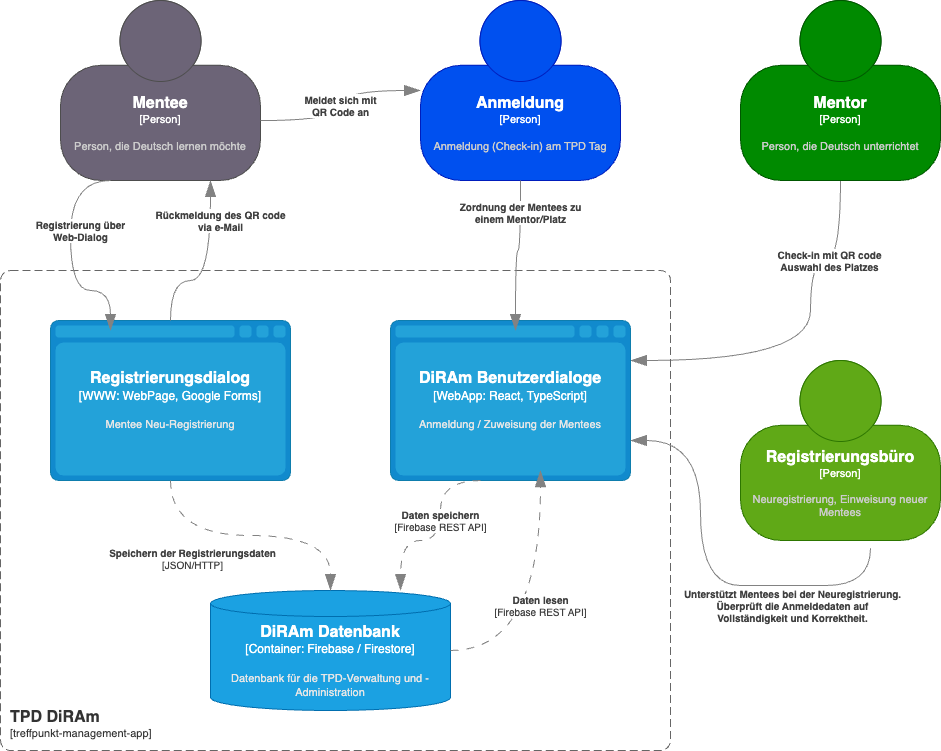

Das Projekt DiRAm Digitale Registrierung und Anmeldung ist ein SW/HW-Projekt zur Unterstützung von Verwaltungs- und Anmeldeprozessen des Treffpunkt Deutsch Heilbronn. Die Organisationsabläufe für die Anmeldung von Mentees, deren Zuordnung zu wechselnden Mentor:innen sind kritisch hinsichtlich der dafür erforderlichen Zeit und dem Aufwand, um die richtigen Sprachlevel (A1-C2) der Mentee-Gruppen zuzuordnen. Daher war die Idee, diesen Anmeldeprozess mit Hilfe digitaler Prozesse flüssiger und schneller zu gestalten. Die Anforderungen an das System kommen im wesentlichen von den Hauptverantwortlichen und den Personen, die den Anmeldeprozess gestalten.
